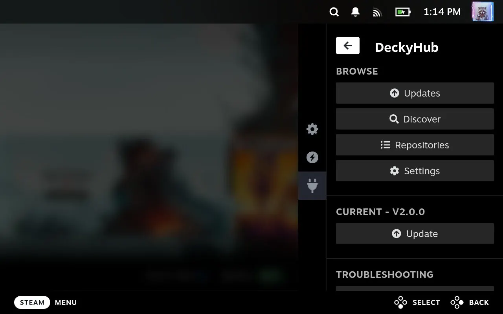
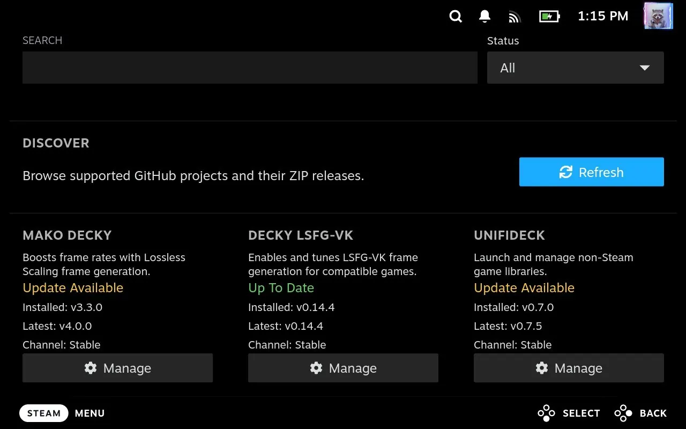
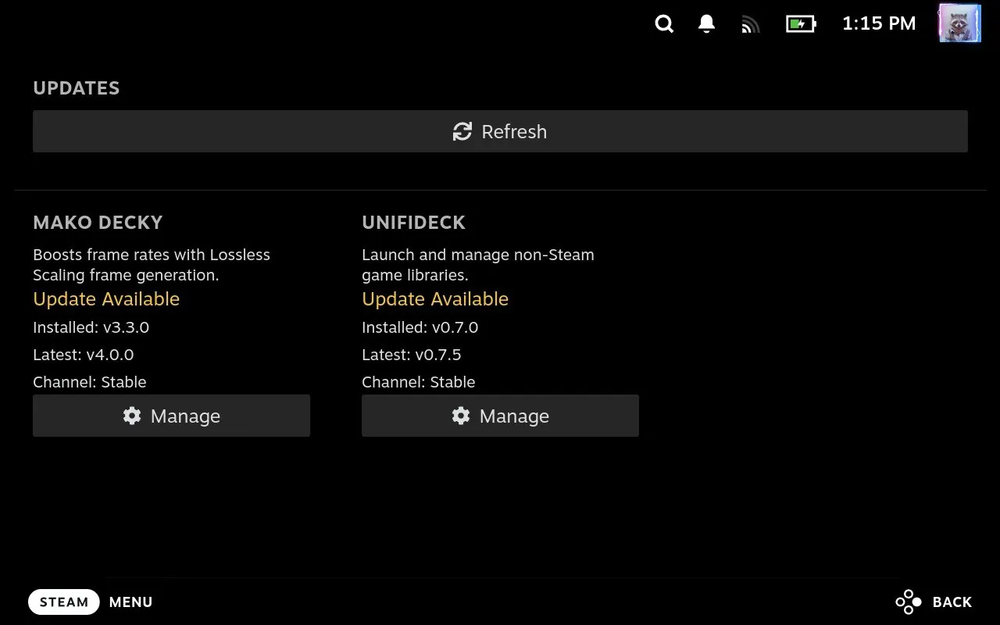
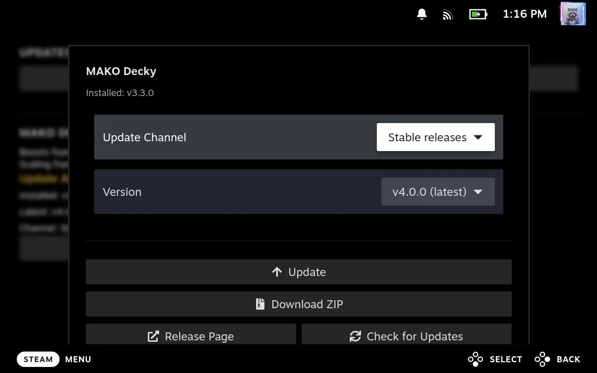

Центр плагінів вашого Steam Deck,
прямо в ігровому режимі.
Знаходьте, завантажуйте й оновлюйте плагіни Decky Loader за допомогою геймпада. Без режиму робочого столу, без пошуку по релізах GitHub, без жонглювання ZIP-файлами.

Чим він сподобається
Створено для дивана: кожен екран працює з геймпадом, і ніщо не торкається вашої системи, доки ви цього не дозволите.
Жодне оновлення не пропущено
DeckyHub кілька разів на день звіряє ваші встановлені плагіни з їхніми останніми релізами на GitHub і сповіщає, коли виходить щось нове.
Відкривайте нові засоби
Каталог із понад 500 плагінів для Steam Deck із фільтром за станом і кольоровими позначками, щоб одразу бачити, що потребує уваги.
Насамперед геймпад
Повне керування геймпадом і дії одним дотиком, створені для ігрового режиму, а не для настільної сторінки, стиснутої на малому екрані. На будь-якій кнопці «Встановити» чи «Оновити» Y показує нотатки до релізу, X завантажує ZIP, а Menu відкриває сторінку плагіна на GitHub.
Ви все контролюєте
Встановлення йдуть через власний інсталятор Decky Loader та його вікно підтвердження, а контрольні суми SHA-256 перевіряються щоразу, коли GitHub їх публікує. Нічого не запускається саме.
Пошук і встановлення
Немає в каталозі? Знайдіть на GitHub будь-який плагін Decky й одразу встановіть його або додайте, щоб стежити за оновленнями. Обирайте стабільний чи пре-реліз для кожного застосунку та експортуйте список, щоб поділитися чи зберегти.
Оновлює сам себе
Меню швидкого доступу повідомляє, коли вийшов новий DeckyHub, і оновлює його на місці. Також можна перевстановити або повернутися до будь-якої нещодавньої версії.
Огляд екранів
Чотири екрани, і до всіх можна дістатися з меню швидкого доступу.




Встановлення за хвилину
Два способи: інсталятор для робочого столу (найпростіший: один файл налаштує Decky Loader, якщо потрібно, і DeckyHub; він попросить пароль адміністратора) або ZIP вручну (без пароля; Decky Loader має бути вже встановлений).
Варіант 1: інсталятор для робочого столу (рекомендовано)
Один файл встановлює і Decky Loader, і DeckyHub: спершу перевіряє Decky Loader і встановлює його, якщо його немає, а потім встановлює DeckyHub. Менше кроків і команд, ніж при окремому встановленні Decky Loader.


Варіант 2: ZIP вручну
Потрібен встановлений Decky Loader.
Також можна обрати Розробник → Встановити плагін за URL і ввести цю адресу (повна інструкція зі встановлення):https://github.com/mazillka/deckyhub-plugin/releases/latest/download/DeckyHub.zip
Популярні плагіни
Вони з'являються в «Огляді» одразу після встановлення DeckyHub, а нові надходять без оновлення DeckyHub. Їх пропонують користувачі або знаходять через каталоги спільноти Decky Extended Plugins і Decky Plugins Explorer, або власний пошук реєстру на GitHub, і кожен перевіряється на робочий реліз перед додаванням. Усе інше знайдіть через Пошук. Описи плагінів надають їхні автори, англійською.
Як DeckyHub контролює якість
DeckyHub встановлює програми на ваш Deck, тож кожна зміна, кожен випуск і кожен плагін у списку перевіряються, перш ніж дістатися до вас. Усе це — відкритий код.
Кожну зміну тестують
Ніщо не зливається, доки не пройдено тести бекенду, модульні тести фронтенду, перевірку типів і понад 140 браузерних тестів, що проходять справжнім інтерфейсом DeckyHub у макеті ігрового режиму, а також аналіз безпеки CodeQL від GitHub.
Кожен випуск перевіряють
Під час випуску всі тести запускаються знову, а кожен ZIP та інсталятор для режиму робочого столу перевіряються ClamAV, VirusTotal і MetaDefender до публікації, з результатами в примітках до випуску. Стабільні випуски спершу пробують на справжньому Steam Deck.
Кожен плагін перевіряють
Список плагінів звіряють з GitHub при кожній зміні, а найновіші ZIP кожного плагіна перевіряються ClamAV і YARA та шукаються на VirusTotal і MetaDefender. Дивіться сторінку кожного плагіна і відомі проблеми.
Безпечний за задумом
Ніщо не встановлюється без вашого натискання. Завантаження — лише через HTTPS, з випусків GitHub самого плагіна, з перевіркою SHA-256, щойно GitHub її публікує, а бекенд використовує лише стандартну бібліотеку Python.
Перевірки й попередження лише інформують і нічого не блокують: чиста перевірка не доводить, що плагін безпечний. Подробиці — у README.
Корисно знати
Чи встановлює DeckyHub щось автоматично?
Ніколи. «Завантажити ZIP» лише зберігає файл у /home/deck/Downloads/deckyhub. «Встановити», «Оновити» та «Видалити» одним дотиком ідуть через власний інсталятор Decky Loader, який спершу просить вас підтвердити.
Я впираюся в ліміт запитів GitHub. Що робити?
Плагіни зі списку DeckyHub не враховуються: дані про їхні релізи надходять з одного файлу, який реєстр оновлює щогодини. Пошук і репозиторії, додані вами самостійно, усе ще звертаються до GitHub, який без входу дозволяє 60 запитів на годину. Додайте особистий токен доступу (права не потрібні) у «Налаштування» → GitHub, щоб підняти ліміт до 5000. Токен лишається на вашому Deck і надсилається лише на api.github.com.
Чому новий реліз не з'являється одразу?
Дані про релізи кешуються на 30 хвилин, а файл релізів списку плагінів оновлюється щогодини, тож новому релізу може знадобитися до години. «Перевірити оновлення» та «Оновити» обходять власний кеш DeckyHub.
Звідки береться список плагінів?
З mazillka/deckyhub-registry. Його плагіни пропонують користувачі або знаходять через два каталоги спільноти, Decky Extended Plugins від beallio і Decky Plugins Explorer від SafetZahirovic, а також власний пошук реєстру на GitHub, який щодня перевіряє завдання на нові плагіни, пропускаючи ті, що виглядають незавершеними. Кожне додавання потребує стабільного релізу на GitHub із ZIP плагіна і переглядається людиною перед включенням у список, хоча й не на безпеку; «Огляд» показує попередження з перевірки безпеки Decky Extended Plugins поруч із кожним плагіном. DeckyHub завантажує список під час запуску й зберігає останню копію для роботи офлайн, тож після свіжого встановлення потрібно один раз підключитися до GitHub. Ви також можете додати чужі списки в «Налаштування» → «Репозиторії» → «Власні реєстри».
Як створено DeckyHub?
Більшість коду написано за допомогою інструментів ШІ (Claude і Codex). Кожен реліз усе одно перевіряється на справжньому Steam Deck перед випуском.